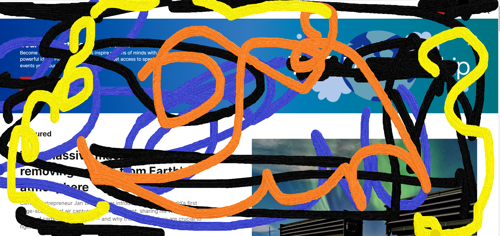

TED.com website
1. Target audience of this page
TED.com focuses on individuals who are interested in learning and expanding
their knowledge on a wide range of topics like space , business , motivation
etc. The site covers people of all ages, backgrounds, and professions who
are curious about the world around them and thye want want to explore new
ideas and what all going around the world.
2. Site organization
The site is organized into several main sections, including Talks,
Playlists, Discover, and Participate. Each part contains subcategories and
filters to help users find the content they are interested fast and easily.
3. CRAP Design Principle used by the site
The site uses the Contrast principle of the CRAP design principle, which
focusess on the use of contrasting colors, fonts, and sizes to make
important elements stand out. An example of this can be seen in the site's
homepage, where the white text on a dark background makes the site's logo
and navigation menu makes it look better.
4. Navigation Design
The site uses several types of navigation design, it also includes a fixed
navigation bar at the top of the page, breadcrumb is also used easy
navigate, and a search bar. The fixed navigation bar makes it easy for users
to access the main sections of the site from any page, while the breadcrumb
navigation helps users keep track of their location within the site.
5. Best Practices Checklist
-
Mobile optimization: The site is optimized for mobile devices , it is
very responsive to all devices , with a responsive design that adjusts
to different screen sizes.
-
Fast loading speed: The site loads faster, with a loading time of under
2 seconds.
-
Accessible design: The site meets web accessibility guidelines, with alt
tags on images and a high contrast design for users with visual
impairments so that when images are not there , it display alt textt.
-
Clear calls-to-action: The site has clear calls-to-action, such as
"Watch" and "Explore," which encourage users to focus with the content.
-
Effective use of multimedia: The site uses a variety of multimedia,
including videos, images, and text, to create an satisfiying user
experience.
Shortcomings: One shortcoming of the site is that the search function is not
always perfect or helpful. It can be difficult to find specific talks or
topics using the search bar, which may make users angry who are looking for
specific content.
6. Recommendation
One recommendation to improve the site would be to add more advanced search
filters to help users reduce their their search results. For example, users
could filter by speaker, topic, date, or language, which would make it
easier to find the content they are looking for.
7. Screenshot
